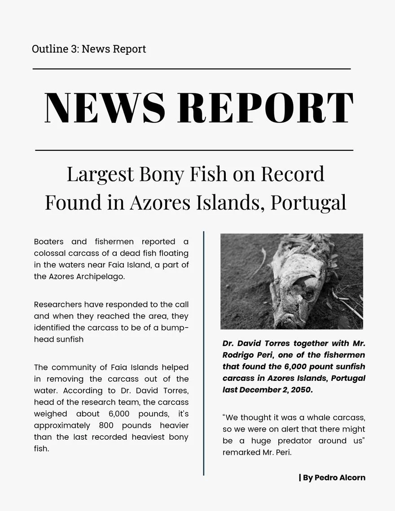

TrendingToday News
The Importance of Physical Activity for a Healthy Life
Regular physical activity is not only essential for maintaining a healthy weight but also plays a crucial role in improving overall
well-being. Exercise helps reduce the risk of chronic diseases, enhances mental clarity, and boosts mood by releasing endorphins,
often referred to as "feel-good" hormones.
Engaging in a mix of cardiovascular exercises, strength training, and flexibility exercises can significantly contribute to better
cardiovascular health, stronger muscles, improved flexibility, and a reduced risk of injuries. Additionally, physical activity is key
to managing stress and anxiety, promoting better sleep, and boosting self-esteem.
Making exercise a part of your daily routine doesn't necessarily mean hitting the gym for hours. Simple activities like walking, cycling,
swimming, or even dancing can provide substantial health benefits. The key is to find an activity you enjoy and can sustain in the long run.
In conclusion, dedicating time to regular physical activity is an investment in your health and quality of life. Start small, stay consistent,
and reap the numerous benefits that an active lifestyle can bring.
Stay tuned for updates as scientists continue to push the boundaries of medical science, bringing hope and advancements to those in need.
How Technology is Shaping the Future
Published on September 23, 2023

Technology is rapidly evolving and changing the way we live, work, and interact with the world around us.
From artificial intelligence and automation to virtual reality and sustainable energy solutions, technological advancements
are shaping the future in profound ways.
With the advent of artificial intelligence, machines are becoming increasingly capable of performing tasks that were once
thought to be the exclusive domain of humans. This has the potential to revolutionize various industries, improving efficiency
and freeing up human resources for more creative and strategic endeavors.
Virtual reality is another technological frontier that holds promise. It has the potential to transform the way we experience
entertainment, education, and even social interactions. As the technology becomes more accessible and immersive, its impact on society
and culture is likely to grow significantly.
Embracing sustainable energy solutions is critical for addressing the challenges of climate change and ensuring a sustainable future.
Technologies such as solar power, wind energy, and electric vehicles are becoming more efficient and affordable, making the transition
to renewable energy sources a viable and urgent goal.
The future is undoubtedly being shaped by technology, and it's essential for us to harness these advancements responsibly and ethically
to create a better and more sustainable world for all.
The future is undoubtedly being shaped by technology, and it's essential for us to harness these advancements responsibly and ethically
to create a better and more sustainable world.

In a groundbreaking discovery, scientists have identified a potential breakthrough in the treatment of a rare genetic disorder.
The research, conducted over several years, offers hope to thousands of individuals affected by this debilitating condition.
The lead researcher, Dr. Emily Johnson, explained, "Our team has been tirelessly working to better understand the genetic underpinnings
of this disorder. This new discovery opens up avenues for targeted therapies that could significantly improve the quality of life
for patients."
The findings have garnered attention from the medical community worldwide, with many experts optimistic about the potential applications
of this research in other genetic disorders. Further clinical trials and research are underway to validate these promising results.
Stay tuned for updates as scientists continue to push the boundaries of medical science, bringing hope and advancements to those in need.